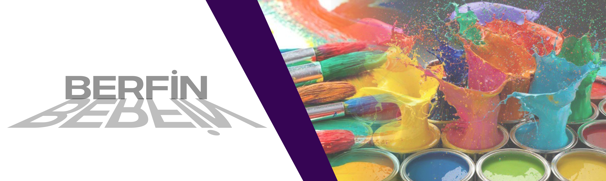

Renk kaynağı olarak ışık
Renkler hakkında seçenekleri, ışıktan bahsetmemek imkansızdır. Bu en önemli konulardan oluşur ve bu alandaki bilgiler, renk yaratma mekanizmaları nasıl bir şeyleri nasıl görmeye geldiğimiz sorusunu cevabını bulmayı yardımcı içerir. O halde en baştan başlayalım. Işığın doğası yıllardır gizemli ve anlaşılması zor olmuştur. Bugün ışığın hem dalga hem de parçacık akışı olarak davrandığını biliyoruz. Bu fenomene dalga-parçacık ikiliği denir.